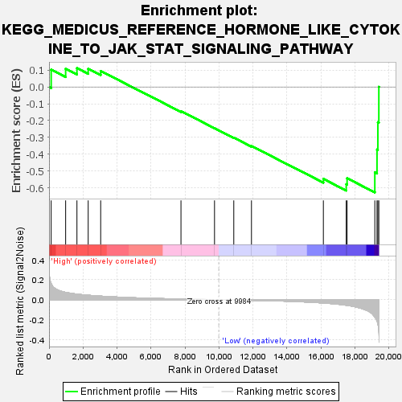
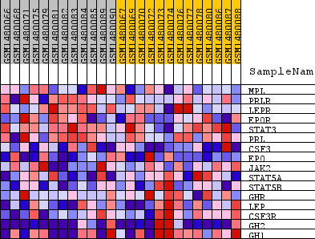
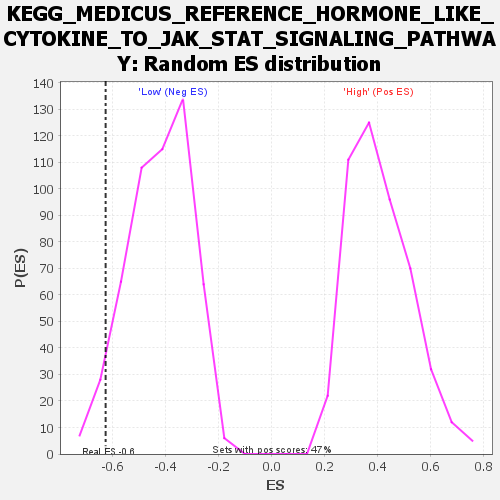

| Dataset | WG6v3.CPT1A.cls#High_versus_Low.CPT1A.cls#High_versus_Low_repos |
| Phenotype | CPT1A.cls#High_versus_Low_repos |
| Upregulated in class | Low |
| GeneSet | KEGG_MEDICUS_REFERENCE_HORMONE_LIKE_CYTOKINE_TO_JAK_STAT_SIGNALING_PATHWAY |
| Enrichment Score (ES) | -0.6269161 |
| Normalized Enrichment Score (NES) | -1.4760652 |
| Nominal p-value | 0.05313093 |
| FDR q-value | 0.5167925 |
| FWER p-Value | 0.997 |

| SYMBOL | TITLE | RANK IN GENE LIST | RANK METRIC SCORE | RUNNING ES | CORE ENRICHMENT | |
|---|---|---|---|---|---|---|
| 1 | MPL | MPL | 126 | 0.161 | 0.1028 | No |
| 2 | PRLR | PRLR | 977 | 0.073 | 0.1085 | No |
| 3 | LEPR | LEPR | 1642 | 0.056 | 0.1121 | No |
| 4 | EPOR | EPOR | 2304 | 0.045 | 0.1084 | No |
| 5 | STAT3 | STAT3 | 3039 | 0.036 | 0.0949 | No |
| 6 | PRL | PRL | 7764 | 0.007 | -0.1439 | No |
| 7 | CSF3 | CSF3 | 9738 | 0.001 | -0.2451 | No |
| 8 | EPO | EPO | 10872 | -0.003 | -0.3016 | No |
| 9 | JAK2 | JAK2 | 11913 | -0.006 | -0.3511 | No |
| 10 | STAT5A | STAT5A | 16144 | -0.033 | -0.5467 | No |
| 11 | STAT5B | STAT5B | 17490 | -0.055 | -0.5785 | Yes |
| 12 | GHR | GHR | 17540 | -0.056 | -0.5429 | Yes |
| 13 | LEP | LEP | 19172 | -0.175 | -0.5082 | Yes |
| 14 | CSF3R | CSF3R | 19301 | -0.210 | -0.3724 | Yes |
| 15 | GH2 | GH2 | 19351 | -0.244 | -0.2100 | Yes |
| 16 | GH1 | GH1 | 19409 | -0.316 | 0.0007 | Yes |

